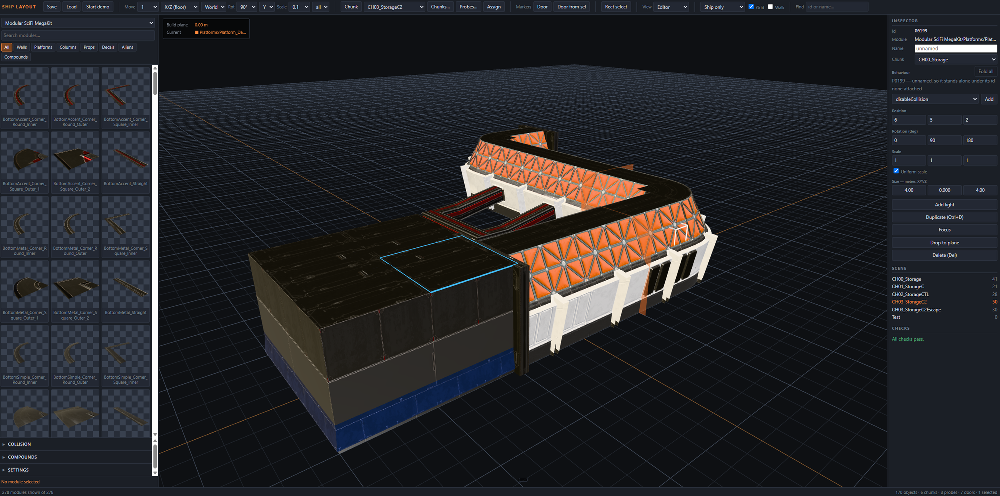
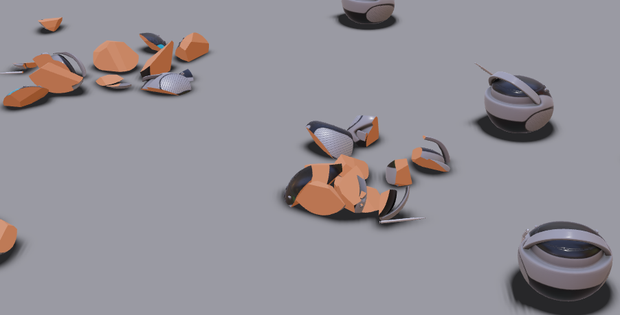
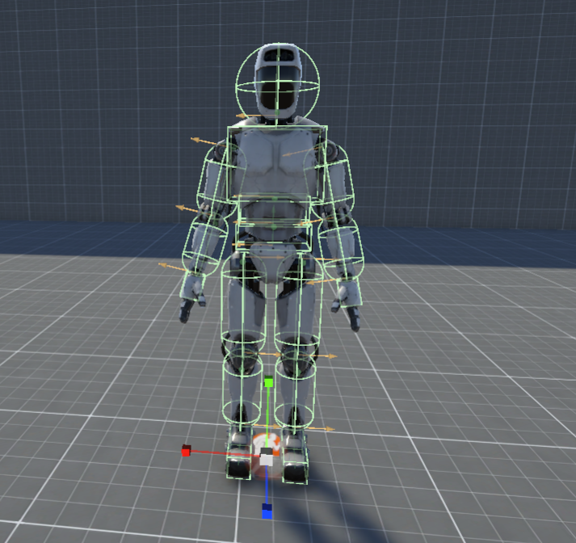
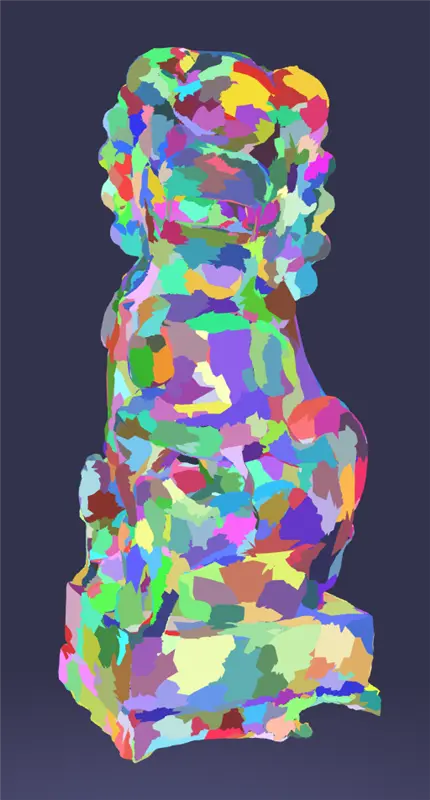

BABYLON.JS · FEATURE EXPLORATIONS
New Frontiers
2026
Six ideas to make complex web experiences simpler to create, richer to explore, and easier to ship.
02 Procedural creation
Rules in.
Worlds out.
Scatter and shape scenes with readable rules inside NGE or a focused editor. Compose placement, raycasts, splines, physics, and particles into a fast world-building loop.
instantiate(tree)where hit.normal.y > 0.72with random.scale(0.8, 1.3)
03 AI-first scene creation
Prompt it.
Then make it yours.
Prompt a complete scene, iterate with AI, then tweak every result using familiar selection, placement, and gizmo tools. Curated asset packs keep generation coherent while creators stay in control.

04 Geometry / Impact
Make every cut
matter.
Define destruction rules and preview them before runtime. Duplicate clipped geometry while preserving attributes, then turn a slice into a memorable interaction.


05 Animation / Physics
Rig once.
React forever.
Physicalize a full character or only selected bones: tails, hair, backpacks, vehicles, even robotics displays. Mix authored animation with dynamic motion where it matters.

06 Rendering / AI research
Neural texture
compression
A neural texture stores learned latent data instead of final pixels. A lightweight decoder reconstructs material channels at runtime, trading texture memory for compact inference.

07 Rendering / Geometry
Stream detail.
Not limits.
Bring a Nanite-like virtual geometry pipeline to the web. Convert complex meshes into streamable clusters, then load and display only the geometry needed for the current view.
